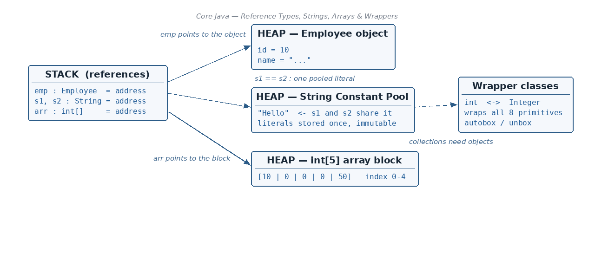

Case 1: passing a primitive — the original never changes
☕ 7 min read · 🎬 Video walkthrough · 📊 UML diagram · 💻 Runnable code
⚡ In a nutshell — What a reference (non-primitive) data type is, and how it lives in heap memory · Why Java is pass-by-value (never pass-by-reference) — with the modify(emp) example · The String Constant Pool and why Strings are immutable · Using an interface reference to point to a concrete class object
Java variables come in two families. Primitives (int, char, ...) hold the value itself. Reference types hold something different: the address of an object that lives somewhere else, in heap memory.

The reference data types are:
Remember: besides primitives and reference types, the notes also list constant variables (
static final, written in CAPITALS, e.g.static final int MAX_AGE = 100;) as a variable category. They are explained in detail in the Variables & Data Types and Methods & Access Specifiers PDFs.
Think of it like a home address written on a card. The card (emp) is not the house; it only tells you where the house is.
Employee emp = new Employee();
emp.id = 10;
STACK HEAP MEMORY
+---------+ .-----------------.
| emp --+-------------->( +----------+ )
+---------+ ( | id = 10 | )
holds a REFERENCE ( | name=... | )
(an address), not ( +----------+ )
the object itself '-----------------'
emp holds a reference to the actual memory where the object lives. Two different variables can hold the same address and therefore point at the same object — this becomes important in the next section.
When you call a method, Java always copies the variable and hands the copy to the method.
public class PassPrimitive {
public static void modify(int x) {
x = 20; // changes only the COPY
}
public static void main(String[] args) {
int a = 10;
modify(a);
System.out.println(a);
}
}
// Output:
// 10 <- 'a' is untouched; only the copy 'x' became 20
modify(emp) exampleHere is the subtle part. The reference is also passed as a copy — but both the original and the copy point at the same object in the heap. So the method can change the object's insides.
class Employee {
int id;
}
public class PassReference {
private static void modify(Employee em) {
em.id = 50; // follows the address, edits the SAME object
}
public static void main(String[] args) {
Employee emp = new Employee();
emp.id = 10;
modify(emp);
System.out.println(emp.id);
}
}
// Output:
// 50 <- the one shared object was changed
emp ----. HEAP
\ +------------------+
+-----> | id = 10 -> 50 | one object,
/ +------------------+ two arrows
em ----' (em is a COPY of the reference,
but it points to the SAME box)
Why is this still pass-by-value? Because what was copied is the address on the card, not a magic link to the variable emp. If modify wrote em = new Employee();, the variable emp outside would be completely unaffected. Java copies values — it just so happens that for objects, the "value" is an address.
Remember: Java always passes a copy. For primitives, a copy of the number. For objects, a copy of the reference — which still leads to the same object.
String is a class, so a String variable holds a reference to an object in the heap. But Strings get a special optimisation: the String Constant Pool.
String s1 = "Hello"; // "Hello" is a literal
String s2 = "Hello"; // reuses the SAME pooled "Hello"
String s3 = new String("Hi"); // 'new' forces a separate object OUTSIDE the pool
HEAP MEMORY
.------------------------------------------.
( +--------------------------------+ )
( | String Constant Pool | )
( | +---------+ | )
( | s1 -> | "Hello" | <- s2 | )
( | +---------+ | )
( +--------------------------------+ )
( )
( +------+ )
( s3 -> | "Hi" | <- created with 'new', )
( +------+ lives outside pool )
'------------------------------------------'
The rule: if "Hello" is already present in the String Constant Pool, then s2 will simply point to the same "Hello" — no new object is created. This saves memory, because programs use the same text again and again.
Immutable means: once a String object is created, it can never be changed. So what happens when you "change" s1?
s1 = "Hello World";
Java does not edit the old "Hello". It creates a new literal "Hello World" in the pool and moves the s1 arrow to it:
String Constant Pool (literals)
+------------------------+
| "Hello" | <- old object, unchanged (s2 still uses it)
| "Hello World" <- s1 | <- NEW object; s1 now points here
+------------------------+
+------+
| "Hi" | } object created with new
+------+
public class StringPoolDemo {
public static void main(String[] args) {
String s1 = "Hello";
String s2 = "Hello";
System.out.println(s1 == s2); // same pooled object?
String s3 = new String("Hello");
System.out.println(s1 == s3); // pool vs 'new' object
System.out.println(s1.equals(s3)); // same characters?
s1 = "Hello World"; // s1 re-points; "Hello" not modified
System.out.println(s1);
System.out.println(s2);
}
}
// Output:
// true <- s1 and s2 share ONE pooled "Hello"
// false <- s3 is a different object in the heap
// true <- but the text content is equal
// Hello World
// Hello <- the original literal is untouched: immutable!
Remember: String literals live in the String Constant Pool. Assigning a "new value" to a String variable never edits the old text — it just moves the arrow to another object.
An interface cannot be instantiated itself, but an interface-type variable can hold a reference to any concrete class that implements it.
Person (Interface)
/ \
Teacher Engineer } Concrete classes
All four of these declarations are valid:
interface Person { void work(); }
class Teacher implements Person {
public void work() { System.out.println("Teaching students"); }
}
class Engineer implements Person {
public void work() { System.out.println("Writing software"); }
}
public class InterfaceRefDemo {
public static void main(String[] args) {
Person softwareEngineer = new Engineer(); // 1) interface ref -> Engineer object
Person teacher = new Teacher(); // 2) interface ref -> Teacher object
Teacher teacher1 = new Teacher(); // 3) class ref -> its own object
Engineer softwareEngineer1 = new Engineer();// 4) class ref -> its own object
softwareEngineer.work();
teacher.work();
}
}
// Output:
// Writing software
// Teaching students
REFERENCES HEAP MEMORY
+----------------------+ .------------------.
| softwareEngineer |---(--> [ Engineer obj ] )
| (type: Person) | ( )
| teacher (type:Person)|---(--> [ Teacher obj ] )
+----------------------+ '------------------'
In plain words: the variable's type (Person) decides what you are allowed to call; the actual object (Engineer) decides what actually runs. This is the foundation of polymorphism.
An array is a sequence of memory which holds the same data type — a row of identical boxes sitting side by side in the heap.
Three legal ways to declare (all mean the same):
int[] arr = new int[5]; // declare + create a 5-slot array
int [] arr2; // declaration style 2
int arr3[]; // declaration style 3 (C-style, allowed but less common)
arr ---------. HEAP MEMORY
\ .---------------------------.
'->( +---+---+---+---+---+ )
( | 0 | 0 | 0 | 0 | 0 | )
( +---+---+---+---+---+ )
( index:0 1 2 3 4 )
'---------------------------'
The array object lives in the heap, and arr is just a reference to it. Each cell gets the type's default value (0 for int).
public class ArrayDemo {
public static void main(String[] args) {
int[] arr = new int[5];
arr[0] = 10;
arr[4] = 50;
for (int i = 0; i < arr.length; i++) {
System.out.print(arr[i] + " ");
}
}
}
// Output:
// 10 0 0 0 50
For every primitive type Java provides a matching class — a "wrapper" that wraps the little primitive value inside a real object.
int — Integerchar — Charactershort — Shortbyte — Bytelong — Longfloat — Floatdouble — Doubleboolean — BooleanReason 1 — Reference capability. A primitive is copied when passed to a method, so the method can never affect the caller's variable:
int a = 10;
modify(a); // a copy of 10 is sent
System.out.println(a); // prints 10 — unchanged
public void modify(int x) {
x = 20; // only the local copy changes
}
Sometimes you want object behaviour — the ability to have a reference, to be null, to carry methods. Wrappers give a primitive that power.
Reason 2 — Collections. Java's collections (ArrayList, HashMap, HashSet, ...) all work on reference data types only. You cannot write ArrayList<int> — you must write ArrayList<Integer>. Wrappers are the ticket that lets primitives enter the collections world.
Java converts between primitive and wrapper automatically:
import java.util.ArrayList;
public class WrapperDemo {
public static void main(String[] args) {
int a = 10;
Integer a1 = a; // AUTOBOXING: primitive -> wrapper (automatic)
Integer x = 20;
int x1 = x; // UNBOXING: wrapper -> primitive (automatic)
System.out.println(a1 + " " + x1);
ArrayList<Integer> list = new ArrayList<>(); // <int> would NOT compile
list.add(5); // autoboxing: int 5 becomes Integer
int first = list.get(0); // unboxing: Integer back to int
System.out.println(first);
}
}
// Output:
// 10 20
// 5
Remember: Autoboxing = wrapping the gift (primitive → object). Unboxing = opening the gift (object → primitive). Java does both silently for you.
em.id = 50) but never the caller's variable.s1 == s2 is true); new String() creates a separate heap object.Person p = new Engineer();) can hold any implementing class's object.👏 Found this useful? Give it a few claps so more developers discover it, and follow for the whole series — every article ships with a UML diagram, runnable code, a narrated video, and a companion PDF. Happy building! 🚀